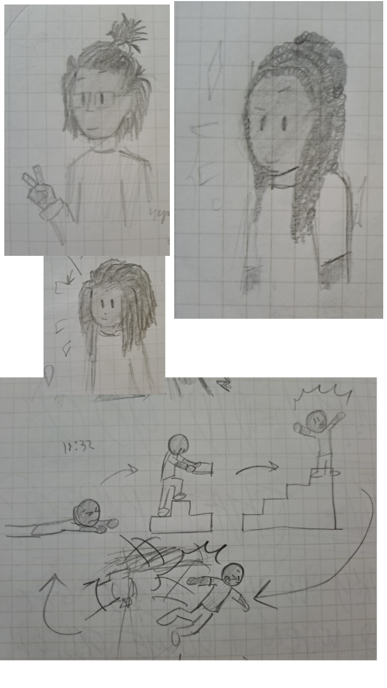
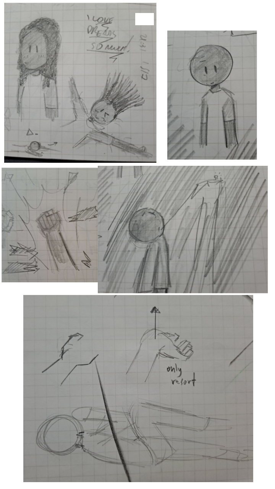
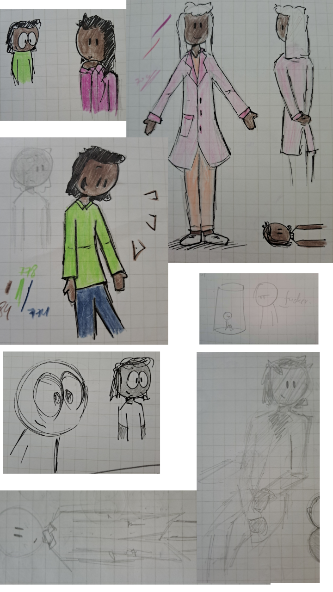
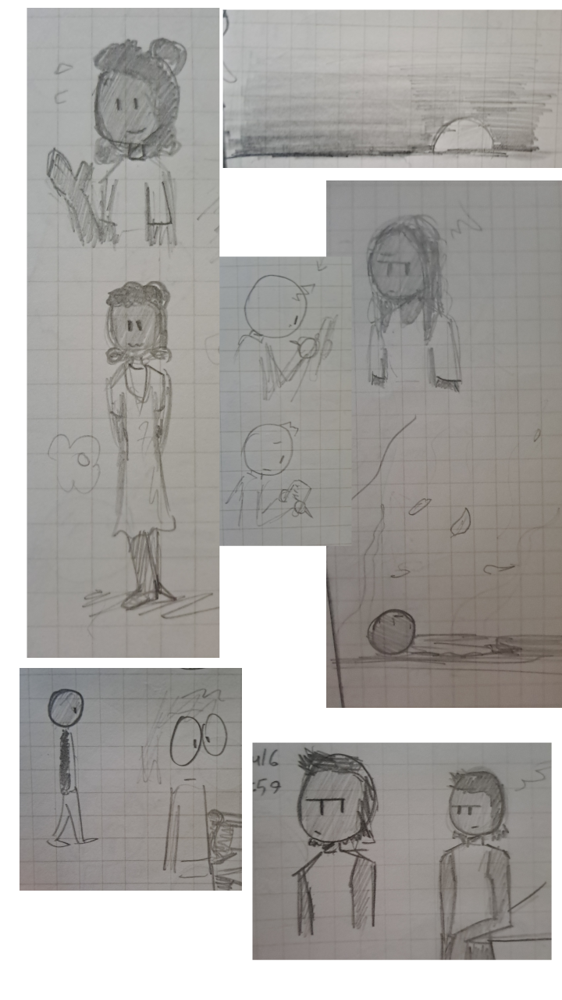
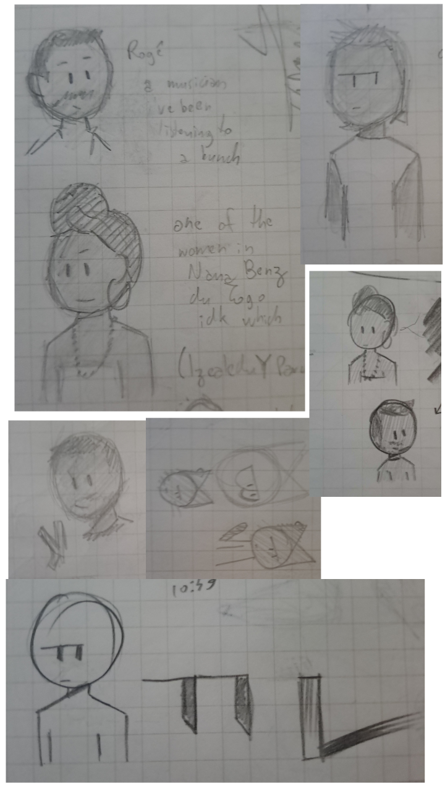
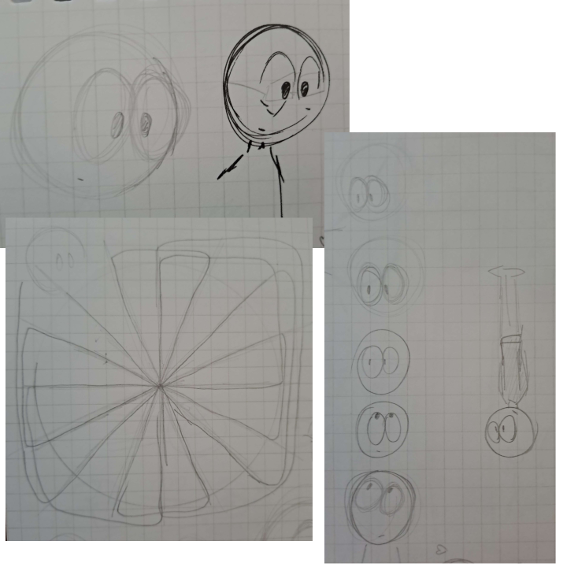

The notebook i've used (am using) while learning about anti-racism; started drawing more black faces, and meaning between the lines.
electricity pole, pointy closed/open hands, girl making waves, girl walking with backpack, sad girl on bed with spread hair {never a break; all challenges her at any chance}.
guy with glasses and wicks held at top by a wide elastic band; confident girl with dreads flowing down left shoulder; guy with freeform wicks; {working within the game of society; the same light hue of person burning, ending your work painfully; but never your spirit}.
girl with dreads, camera looking at them spread out on a bed; concerned/pained looking person; freedom {it will happen}; the ivory tower; {why is this here}
colored drawings of dark skinned people (big oval eyes and lime green shirt, long hair and pink suit; white hair, light pink tuxedo, orange shirt and pants and white shoes, guy with white croptop; pencil test and colored version (surprised guy [finally!] with lime long-sleeve shirt and dark blue pants)); {fucker.}; wide oval eyes looking eager, guy with wide oval eyes, white shirt and dark skin; lightly dark skin guy on tuxedo with a sitting pose, white guy with similar tuxedo.
girl with long hair held by elastic band waving, and standing cutely with a long dress; guy drawing on notebook, guy looking sad at notebook; distressed girl, sad dark skinned man lying on ground with leaves falling {don't you dare erase me.}; guy walking, very wide eyes; kind of annoyed guy with croptop, same guy leaning on table.
guy with short hair and mustache, woman with a turban, determined expression, collar and earring, text besides them reads: "Rogê (a musician i've been listening to a bunch); one of the women in Nana Benz du Togo idk which (Izealedu or Parus Kekeli or Lady Apoc)"; guy with croptop... again; simpler renditions of the drawings of Rogê and singer from Nana Benz du Togo; guy with short hair and mustache doing a V sign; minimalistic cat with earring; guy with low brows and pointy eyes, eyes zoomed in, rectangle with shadow.
tests of wide oval eyes, 16 slices of a circle intersected by various shapes, 6 more tests of wide oval eyes.